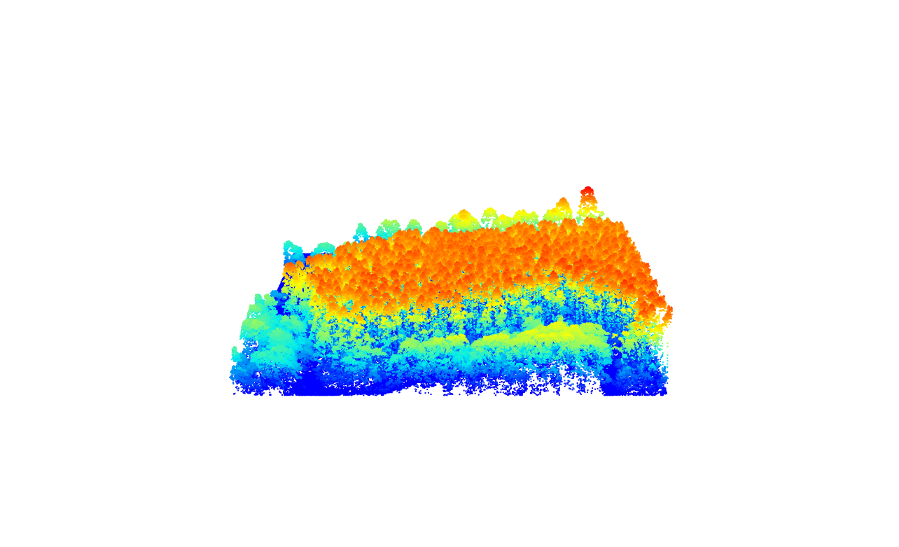
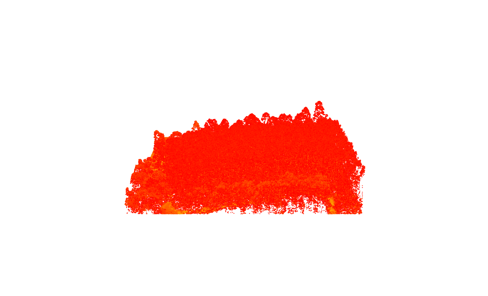
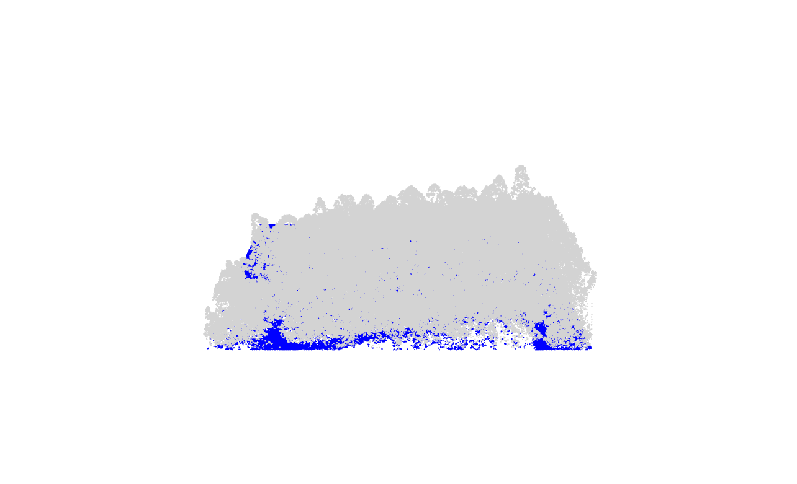
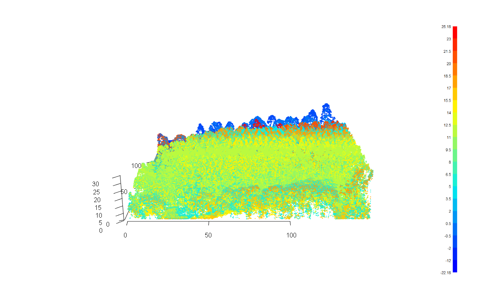
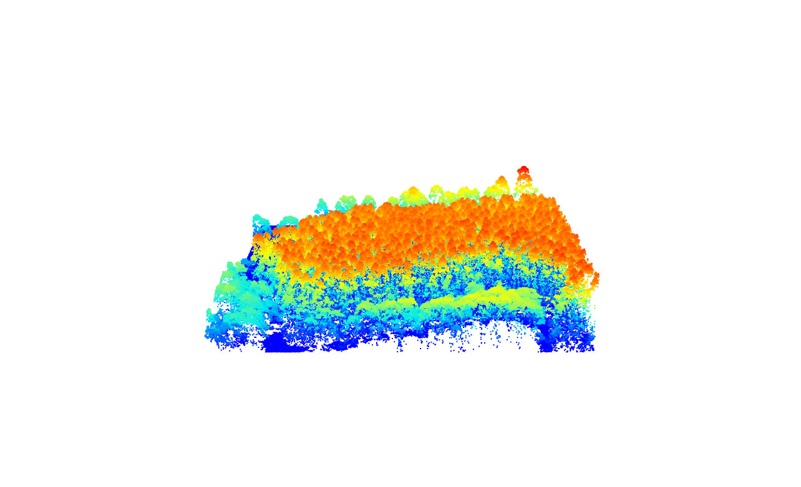
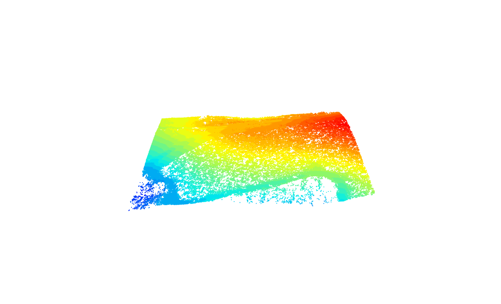
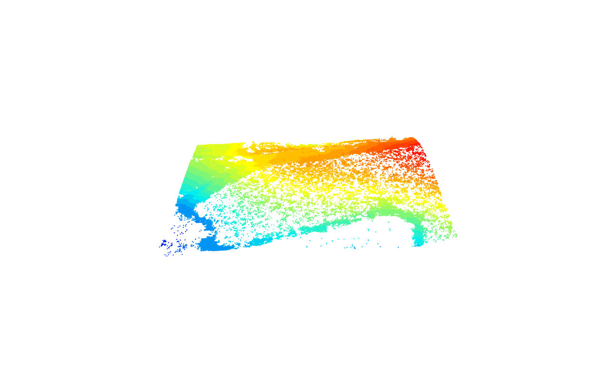
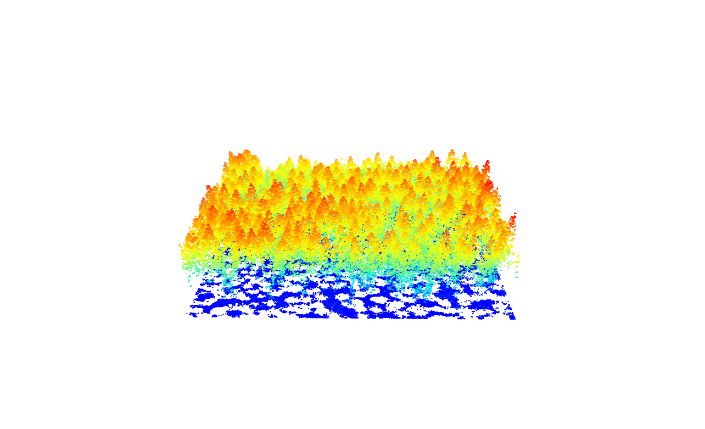

Warning: package 'rgl' was built under R version 4.2.3Read/Plot/Query/Validate
Relevant Resources
Overview
Welcome to this LiDAR data processing tutorial using R and the lidR library! In this tutorial, you will learn how to read, visualize, query, and validate LiDAR data.
We’ll explore basic information like the header and tabular data and visualize point clouds using different color schemes based on attributes.
We’ll use the select argument in readLAS() to load specific attributes and the filter argument to load only points of interest or apply transformations on-the-fly. We’ll validate the LiDAR data using the las_check function on different LiDAR data files to ensure data integrity.
Let’s get started with processing LiDAR data efficiently using lidR and R! Happy learning!
Environment
We start by loading the necessary packages, clearing our current environment, and specifying that some warnings be turned off to make our outputs clearer. We will do this for each section in the tutorial.
# Clear environment
rm(list = ls(globalenv()))
# Load packages
library(lidR)
#> Warning: package 'lidR' was built under R version 4.2.3
library(sf)
#> Warning: package 'sf' was built under R version 4.2.3Basic Usage
Load and Inspect LiDAR Data
Load the LiDAR point cloud data from a LAS file using the readLAS() function. The data is stored in the las object. We can inspect the header information and attributes of the las object.
las <- readLAS(files = "data/MixedEucaNat_normalized.laz")
#> Warning: There are 127471 points flagged 'withheld'.
# Inspect header information
las@header
#> File signature: LASF
#> File source ID: 0
#> Global encoding:
#> - GPS Time Type: GPS Week Time
#> - Synthetic Return Numbers: no
#> - Well Know Text: CRS is GeoTIFF
#> - Aggregate Model: false
#> Project ID - GUID: 00000000-0000-0000-0000-000000000000
#> Version: 1.2
#> System identifier:
#> Generating software: rlas R package
#> File creation d/y: 0/2013
#> header size: 227
#> Offset to point data: 297
#> Num. var. length record: 1
#> Point data format: 0
#> Point data record length: 20
#> Num. of point records: 551117
#> Num. of points by return: 402654 125588 21261 1571 43
#> Scale factor X Y Z: 0.01 0.01 0.01
#> Offset X Y Z: 2e+05 7300000 0
#> min X Y Z: 203830 7358900 0
#> max X Y Z: 203980 7359050 34.46
#> Variable Length Records (VLR):
#> Variable Length Record 1 of 1
#> Description: by LAStools of rapidlasso GmbH
#> Tags:
#> Key 3072 value 31983
#> Extended Variable Length Records (EVLR): void
# Inspect attributes of the point cloud
las@data
#> X Y Z Intensity ReturnNumber NumberOfReturns
#> 1: 203851.6 7359049 0 285 1 1
#> 2: 203922.2 7359048 0 343 1 1
#> 3: 203942.9 7359045 0 104 2 2
#> 4: 203830.0 7359045 0 284 1 1
#> 5: 203841.2 7359047 0 290 1 1
#> ---
#> 551113: 203902.5 7359050 0 259 2 2
#> 551114: 203907.1 7359050 0 206 1 1
#> 551115: 203956.0 7359050 0 309 1 1
#> 551116: 203962.5 7359050 0 100 2 2
#> 551117: 203972.6 7359050 0 46 2 2
#> ScanDirectionFlag EdgeOfFlightline Classification Synthetic_flag
#> 1: 0 0 2 FALSE
#> 2: 0 0 2 FALSE
#> 3: 0 0 2 FALSE
#> 4: 0 0 2 FALSE
#> 5: 0 0 2 FALSE
#> ---
#> 551113: 0 0 2 FALSE
#> 551114: 0 0 2 FALSE
#> 551115: 0 0 2 FALSE
#> 551116: 0 0 2 FALSE
#> 551117: 0 0 2 FALSE
#> Keypoint_flag Withheld_flag ScanAngleRank UserData PointSourceID
#> 1: FALSE TRUE -21 0 14
#> 2: FALSE TRUE -21 0 14
#> 3: FALSE TRUE -21 0 14
#> 4: FALSE TRUE -21 0 14
#> 5: FALSE TRUE -21 0 14
#> ---
#> 551113: FALSE TRUE -3 0 15
#> 551114: FALSE TRUE -3 0 15
#> 551115: FALSE TRUE -21 0 14
#> 551116: FALSE TRUE -21 0 14
#> 551117: FALSE TRUE -1 0 15
# Check the file size of the loaded LiDAR data
format(object.size(las), "Mb")
#> [1] "37.9 Mb"Visualize LiDAR Data
We can visualize the LiDAR data using the plot() function. We have several options to control the colors in the plot, such as selecting specific attributes from the data to be used as colors.
lidR plot background colour
Set the background of plots to white using plot(las, bg = "white"). To keep the code clean I’ve omitted it from examples.
plot(las)
plot(las, color = "Intensity")
plot(las, color = "Classification")
plot(las, color = "ScanAngleRank", axis = TRUE, legend = TRUE)
Optimized Usage
Selecting Attributes of Interest
The readLAS() function allows us to select specific attributes to be loaded into memory. This is useful to save memory when dealing with large LiDAR datasets.
# Load only the xyz coordinates (X, Y, Z) and ignore other attributes
las <- readLAS(files = "data/MixedEucaNat_normalized.laz", select = "xyz")
#> Warning: There are 127471 points flagged 'withheld'.
# Inspect the loaded attributes
las@data
#> X Y Z
#> 1: 203851.6 7359049 0
#> 2: 203922.2 7359048 0
#> 3: 203942.9 7359045 0
#> 4: 203830.0 7359045 0
#> 5: 203841.2 7359047 0
#> ---
#> 551113: 203902.5 7359050 0
#> 551114: 203907.1 7359050 0
#> 551115: 203956.0 7359050 0
#> 551116: 203962.5 7359050 0
#> 551117: 203972.6 7359050 0
# Check the memory size after loading only the selected attributes
format(object.size(las), "Mb")
#> [1] "12.6 Mb"Filtering Points of Interest
We can also load only a subset of the LiDAR points based on certain criteria using the filter argument in readLAS().
# Load only the first return points
las <- readLAS(files = "data/MixedEucaNat_normalized.laz", filter = "-keep_first")
#> Warning: There are 93138 points flagged 'withheld'.
# Inspect the loaded points
las
#> class : LAS (v1.2 format 0)
#> memory : 20 Mb
#> extent : 203830, 203980, 7358900, 7359050 (xmin, xmax, ymin, ymax)
#> coord. ref. : SIRGAS 2000 / UTM zone 23S
#> area : 22500 m²
#> points : 402.7 thousand points
#> density : 17.9 points/m²
#> density : 17.9 pulses/m²
# Check the memory size after loading only the filtered points
format(object.size(las), "Mb")
#> [1] "27.7 Mb"plot(las)
Applying Transformation on-the-fly
The filter argument in readLAS() can also be used to apply a transformation to the points on-the-fly during loading. This can be useful for tasks such as normalizing the point cloud heights.
# Load and visualize with an applied filter
las <- readLAS(files = "data/MixedEucaNat.laz", filter = "-keep_class 2")
#> Warning: There are 40553 points flagged 'withheld'.plot(las)
Filtering Points using filter_poi()
An alternative method for filtering points is using the filter_poi() function. This function allows filtering based on attributes of points.
# Filter points with Classification == 2
class_2 <- filter_poi(las = las, Classification == 2L)
# Combine queries to filter points with Classification == 1 and ReturnNumber == 1
first_ground <- filter_poi(las = las, Classification == 2L & ReturnNumber == 1L)plot(class_2)plot(first_ground)
LAS Objects Validation
The lidR package provides a function las_check() to validate LAS objects for common issues.
# Load and validate LAS data
las <- readLAS(files = "data/MixedEucaNat_normalized.laz")
#> Warning: There are 127471 points flagged 'withheld'.
las_check(las)
#>
#> Checking the data
#> - Checking coordinates...[0;32m ✓[0m
#> - Checking coordinates type...[0;32m ✓[0m
#> - Checking coordinates range...[0;32m ✓[0m
#> - Checking coordinates quantization...[0;32m ✓[0m
#> - Checking attributes type...[0;32m ✓[0m
#> - Checking ReturnNumber validity...[0;32m ✓[0m
#> - Checking NumberOfReturns validity...[0;32m ✓[0m
#> - Checking ReturnNumber vs. NumberOfReturns...[0;32m ✓[0m
#> - Checking RGB validity...[0;32m ✓[0m
#> - Checking absence of NAs...[0;32m ✓[0m
#> - Checking duplicated points...[0;32m ✓[0m
#> - Checking degenerated ground points...
#> [1;33m ⚠ There were 37 degenerated ground points. Some X Y coordinates were repeated but with different Z coordinates[0m
#> - Checking attribute population...
#> [0;32m 🛈 'ScanDirectionFlag' attribute is not populated[0m
#> [0;32m 🛈 'EdgeOfFlightline' attribute is not populated[0m
#> - Checking gpstime incoherances[0;37m skipped[0m
#> - Checking flag attributes...
#> [0;32m 🛈 127471 points flagged 'withheld'[0m
#> - Checking user data attribute...[0;32m ✓[0m
#> Checking the header
#> - Checking header completeness...[0;32m ✓[0m
#> - Checking scale factor validity...[0;32m ✓[0m
#> - Checking point data format ID validity...[0;32m ✓[0m
#> - Checking extra bytes attributes validity...[0;32m ✓[0m
#> - Checking the bounding box validity...[0;32m ✓[0m
#> - Checking coordinate reference system...[0;32m ✓[0m
#> Checking header vs data adequacy
#> - Checking attributes vs. point format...[0;32m ✓[0m
#> - Checking header bbox vs. actual content...[0;32m ✓[0m
#> - Checking header number of points vs. actual content...[0;32m ✓[0m
#> - Checking header return number vs. actual content...[0;32m ✓[0m
#> Checking coordinate reference system...
#> - Checking if the CRS was understood by R...[0;32m ✓[0m
#> Checking preprocessing already done
#> - Checking ground classification...[0;32m yes[0m
#> - Checking normalization...[0;32m yes[0m
#> - Checking negative outliers...[0;32m ✓[0m
#> - Checking flightline classification...[0;32m yes[0m
#> Checking compression
#> - Checking attribute compression...
#> - ScanDirectionFlag is compressed
#> - EdgeOfFlightline is compressed
#> - Synthetic_flag is compressed
#> - Keypoint_flag is compressed
#> - UserData is compressed
# Visualize corrupted LAS data
las <- readLAS(files = "data/example_corrupted.laz")
#> Warning: Invalid data: 174638 points with a 'return number' greater than the
#> 'number of returns'.plot(las)
# Validate corrupted LAS data
las_check(las)
#>
#> Checking the data
#> - Checking coordinates...[0;32m ✓[0m
#> - Checking coordinates type...[0;32m ✓[0m
#> - Checking coordinates range...[0;32m ✓[0m
#> - Checking coordinates quantization...[0;32m ✓[0m
#> - Checking attributes type...[0;32m ✓[0m
#> - Checking ReturnNumber validity...[0;32m ✓[0m
#> - Checking NumberOfReturns validity...[0;32m ✓[0m
#> - Checking ReturnNumber vs. NumberOfReturns...
#> [1;33m ⚠ Invalid data: 174638 points with a 'return number' greater than the 'number of returns'.[0m
#> - Checking RGB validity...[0;32m ✓[0m
#> - Checking absence of NAs...[0;32m ✓[0m
#> - Checking duplicated points...
#> [1;33m ⚠ 202348 points are duplicated and share XYZ coordinates with other points[0m
#> - Checking degenerated ground points...
#> [1;33m ⚠ There were 31445 degenerated ground points. Some X Y Z coordinates were repeated[0m
#> - Checking attribute population...
#> [0;32m 🛈 'PointSourceID' attribute is not populated[0m
#> [0;32m 🛈 'ScanDirectionFlag' attribute is not populated[0m
#> [0;32m 🛈 'EdgeOfFlightline' attribute is not populated[0m
#> - Checking gpstime incoherances[0;37m skipped[0m
#> - Checking flag attributes...[0;32m ✓[0m
#> - Checking user data attribute...[0;32m ✓[0m
#> Checking the header
#> - Checking header completeness...[0;32m ✓[0m
#> - Checking scale factor validity...[0;32m ✓[0m
#> - Checking point data format ID validity...[0;32m ✓[0m
#> - Checking extra bytes attributes validity...[0;32m ✓[0m
#> - Checking the bounding box validity...[0;32m ✓[0m
#> - Checking coordinate reference system...[0;32m ✓[0m
#> Checking header vs data adequacy
#> - Checking attributes vs. point format...[0;32m ✓[0m
#> - Checking header bbox vs. actual content...[0;32m ✓[0m
#> - Checking header number of points vs. actual content...[0;32m ✓[0m
#> - Checking header return number vs. actual content...[0;32m ✓[0m
#> Checking coordinate reference system...
#> - Checking if the CRS was understood by R...[0;32m ✓[0m
#> Checking preprocessing already done
#> - Checking ground classification...[0;32m yes[0m
#> - Checking normalization...[0;32m yes[0m
#> - Checking negative outliers...
#> [1;33m ⚠ 77 points below 0[0m
#> - Checking flightline classification...[0;31m no[0m
#> Checking compression
#> - Checking attribute compression...
#> - ScanDirectionFlag is compressed
#> - EdgeOfFlightline is compressed
#> - Synthetic_flag is compressed
#> - Keypoint_flag is compressed
#> - Withheld_flag is compressed
#> - ScanAngleRank is compressed
#> - UserData is compressed
#> - PointSourceID is compressedExercises and Questions
Using:
las <- readLAS(files = "data/MixedEucaNat_normalized.laz")E1.
What are withheld points? Where are they in our point cloud?
E2.
Read the file dropping withheld points.
E3.
The withheld points seem to be legitimate points that we want to keep. Try to load the file including the withheld points but get rid of the warning (without using suppressWarnings()). Hint: Check available -set_withheld filters using readLAS(filter = "-h").
E4.
Load only the ground points and plot the point cloud colored by the return number of the point. Do it loading the strict minimal amount of memory (4.7 Mb). Hint: use ?lidR::readLAS and see what select options might help.
Conclusion
This concludes our tutorial on the basic usage of the lidR package in R for processing and analyzing LiDAR data. We covered loading LiDAR data, inspecting and visualizing the data, selecting specific attributes, filtering points, and validating LAS objects for issues.